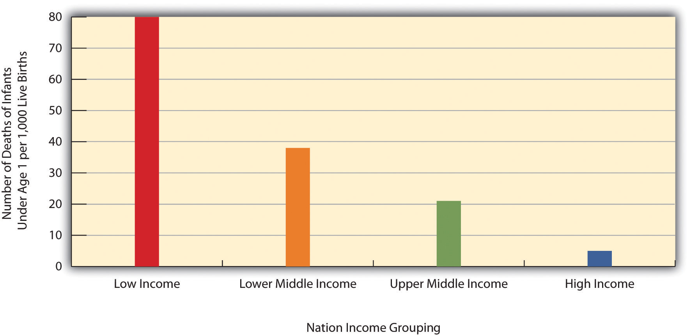

As with many topics in sociology, understanding what happens in other societies and cultures helps us to understand what happens in our own society. This section’s discussion of health and health care across the globe, then, helps shed some light on what is good and bad about U.S. health and medicine.

Two-thirds of the 33 million people worldwide who have HIV/AIDS live in sub-Saharan Africa. This terrible fact illustrates just one of the many health problems that people in poor nations suffer.
Source: Photo courtesy of khym54, http://www.flickr.com/photos/khym54/144915009.
The nations of the world differ dramatically in the quality of their health and health care. The poorest nations suffer terribly. Their people suffer from poor nutrition, unsafe water, inadequate sanitation, a plethora of diseases, and inadequate health care. One disease they suffer from is AIDS. Some 33 million people worldwide have HIV/AIDS, and two-thirds of these live in sub-Saharan Africa. Two million people, most of them from this region, died in 2008 from HIV/AIDS (World Health Organization, 2010).World Health Organization. (2010). WHO and HIV/AIDS. Retrieved from http://www.who.int/hiv/en/index.html All of these problems produce high rates of infant mortality and maternal mortality and high death rates. For all of these reasons, people in the poorest nations have shorter life spans than those in the richest nations.
A few health indicators should indicate the depth of the problem. Figure 18.1 "Infant Mortality for Low Income, Lower Middle Income, Higher Middle Income, and High Income Nations, 2008" compares an important indicator, infant mortality (number of deaths before age 1 per 1,000 live births) for nations grouped into four income categories. The striking contrast between the two groups provides dramatic evidence of the health problems poor nations face. When, as Figure 18.1 "Infant Mortality for Low Income, Lower Middle Income, Higher Middle Income, and High Income Nations, 2008" indicates, 80 children in the poorest nations die before their first birthday for every 1,000 live births (equivalent to 8 out of 100), the poor nations have serious problems indeed. Figure 18.2 "Percentage of Population With Access to Adequate Sanitation Facilities, 2008" shows how the world differs in access to adequate sanitation facilities (i.e., the removal of human waste from the physical environment, as by toilets). Whereas this percentage is at least 98% in the wealthy nations of North America, Western Europe, Australia, and New Zealand, it is less than 33% in many poor nations in Africa and Asia.
Figure 18.1 Infant Mortality for Low Income, Lower Middle Income, Higher Middle Income, and High Income Nations, 2008
Source: Data from World Bank. (2010). Health nutrition and population statistics. Retrieved from http://databank.worldbank.org/ddp/home.do?Step=2&id=4.
Figure 18.2 Percentage of Population With Access to Adequate Sanitation Facilities, 2008

Source: Adapted from World Bank. (2010). Improved sanitation facilities (% of population with access). Retrieved from http://ddp-ext.worldbank.org/ext/ddpreports/ViewSharedReport?&CF=&REPORT_ID=5558&REQUEST_TYPE=VIEWADVANCEDMAP.
Chapter 9 "Global Stratification" presented an international map on life expectancy. That map was certainly relevant for understanding aging around the globe but is also relevant for understanding worldwide disparities in health and health care. We reproduce this map here (see Figure 18.3 "Average Life Expectancy Across the Globe (Years)"). Not surprisingly, the global differences in this map are similar to those for adequate sanitation in the map depicted in Figure 18.2 "Percentage of Population With Access to Adequate Sanitation Facilities, 2008". North America, Western Europe, Australia, and New Zealand have much longer life expectancies (75 years and higher) than Africa and Asia, where some nations have expectancies below 50 years. The society we live in can affect our life span by more than a quarter of a century.
Figure 18.3 Average Life Expectancy Across the Globe (Years)

Source: Adapted from Global Education Project. (2004). Human conditions: World life expectancy map. Retrieved from http://www.theglobaleducationproject.org/earth/human-conditions.php.
Industrial nations throughout the world, with the notable exception of the United States, provide their citizens with some form of national health care and national health insuranceA system of medicine in which the government pays all or most of the costs of health care, prescriptions, and other items for the entire population. (Reid, 2009).Reid, T. R. (2009). The healing of America: A global quest for better, cheaper, and fairer health care. New York, NY: Penguin Press. Although their health-care systems differ in several respects, their governments pay all or most of the costs for health care, drugs, and other health needs. In Denmark, for example, the government provides free medical care and hospitalization for the entire population and pays for some medications and some dental care. In France, the government pays for some of the medical, hospitalization, and medication costs for most people and all of these expenses for the poor, unemployed, and children under the age of 10. In Great Britain, the National Health Service pays most medical costs for the population, including medical care, hospitalization, prescriptions, dental care, and eyeglasses. In Canada, the National Health Insurance system also pays for most medical costs. Patients do not even receive bills from their physicians, who instead are paid by the government.
Although these national health insurance programs are not perfect—for example, people sometimes must wait for elective surgery and some other procedures—they are commonly credited with reducing infant mortality, extending life expectancy, and more generally for enabling their citizenries to have relatively good health. In all of these respects, these systems offer several advantages over the health-care model found in the United States (Hacker, 2008)Hacker, J. S. (Ed.). (2008). Health at risk: America’s ailing health system—and how to heal it. New York, NY: Columbia Univeristy Press. (see the “Learning From Other Societies” box).
National Health Care in Wealthy Nations
As the text discusses, industrial nations other than the United States provide free or low-cost health care to their citizens in what is known as national (or universal) health insurance and national health care. Although the United States spends more per capita than these nations on health care, it generally ranks much lower than they do on important health indicators. Of 23 wealthy nations from North America, Western Europe, and certain other parts of the world (Australia, Japan, New Zealand; the exact number of nations varies slightly by indicator), the United States has the lowest life expectancy and the highest infant mortality and rate of diabetes. It ranks only 21st in mortality from heart disease and stroke and only 15th in dental health among children. The United States also ranks lowest for annual doctor consultations per capita and among the highest for hospital admissions for various conditions, such as congestive heart failure, that are avoidable with adequate primary and outpatient care (Organisation for Economic Co-operation and Development, 2009).Organisation for Economic Co-operation and Development. (2009). Health at a glance 2009: OECD indicators. Paris, France: Author. The conclusion from these international comparisons is inescapable:
Although the United States spends more on health care than other countries with similar per capita income and populations, it has worse health outcomes, on average.…Compared to the United States, other countries are more committed to the health and well-being of their citizens through more-universal coverage and more-comprehensive health care systems. (Mishel, Bernstein, & Shierholz, 2009, pp. 349, 353)Mishel, L., Bernstein, J., & Shierholz, H. (2009). The state of working America 2008/2009. Ithaca, NY: ILR Press [An imprint of Cornell University Press].
Because of Canada’s proximity, many studies compare health and health-care indicators between the United States and Canada. A recent review summarized the evidence: “Although studies’ findings go in both directions, the bulk of the research finds higher quality of care in Canada” (Docteur & Berenson, 2009, p. 7).Docteur, E., & Berenson, R. A. (2009). How does the quality of U.S. health care compare internationally? Washington, DC: Urban Institute.
Surveys of random samples of citizens in several nations provide additional evidence of the advantages of the type of health care found outside the United States and the disadvantages of the U.S. system. In surveys in 2007 of U.S. residents and those of six other nations (Australia, Canada, Germany, the Netherlands, New Zealand, and the United Kingdom), Americans ranked highest in the percentage uninsured (16% in the United States compared to 0%–2% elsewhere), highest in the percentage that did not receive needed medical care during the last year because of costs, and highest by far in the percentage that had “serious problems” in paying medical bills in the past year (Schoen et al., 2007).Schoen, C., Osborn, R., Doty, M. M., Bishop, M., Peugh, J., & Murukutla, N. (2007). Toward higher-performance health systems: Adults’ health care experiences in seven countries, 2007. Health Affairs 26(6), w717–w734.
A fair conclusion from all the evidence is that U.S. health lags behind that found in other wealthy nations because the latter provide free or low-cost national health care to their citizens and the United States does not. If so, the United States has much to learn from their example. Because the health-care reform achieved in the United States in 2009 and 2010 did not include a national health-care model, the United States will likely continue to lag behind other democracies in the quality of health and health care. Even so, the cost of health care will certainly continue to be much higher in the United States than in other Western nations, in part because the United States uses a fee-for-service model in which physicians are paid for every procedure they do rather than the set salary that some other nations feature.